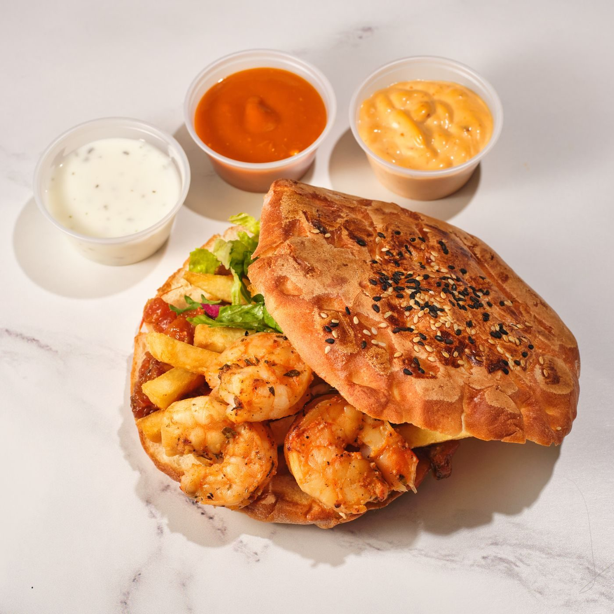
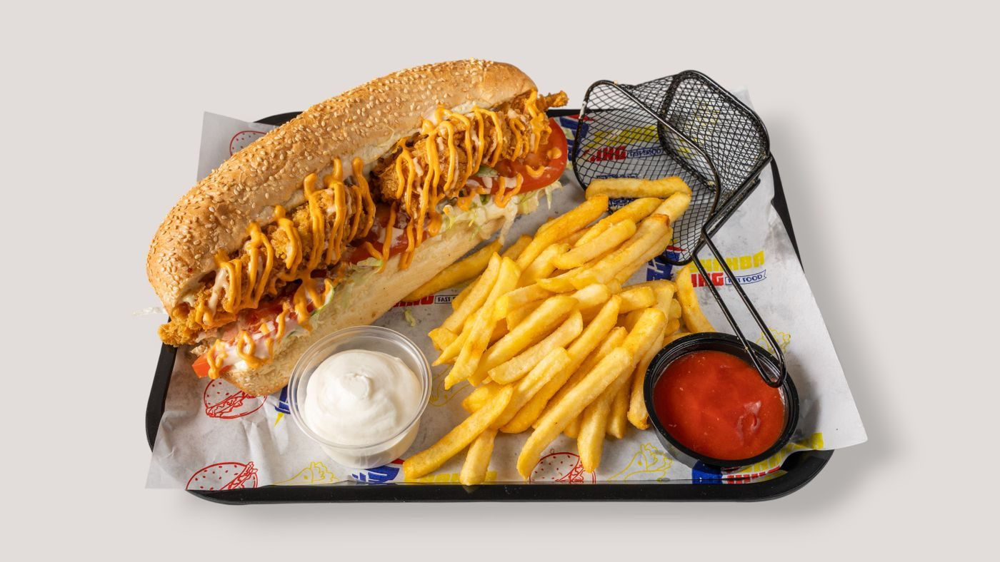
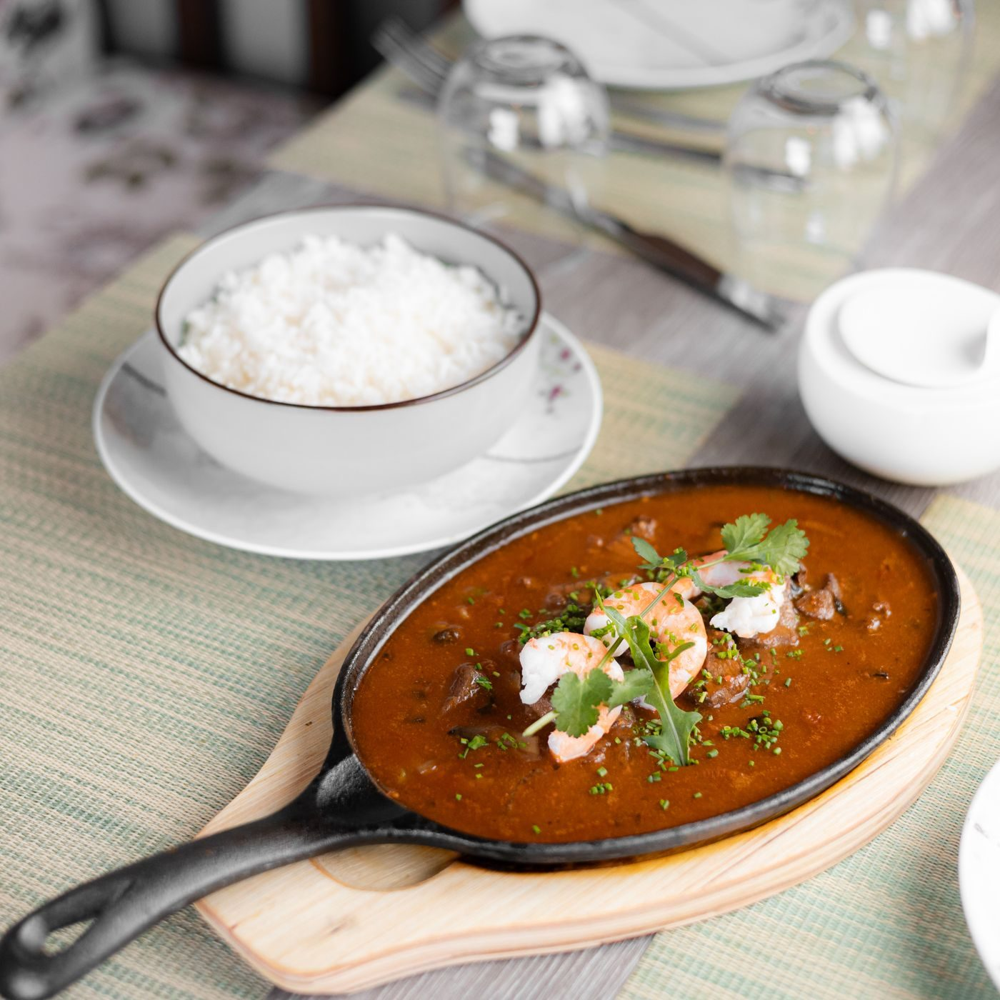
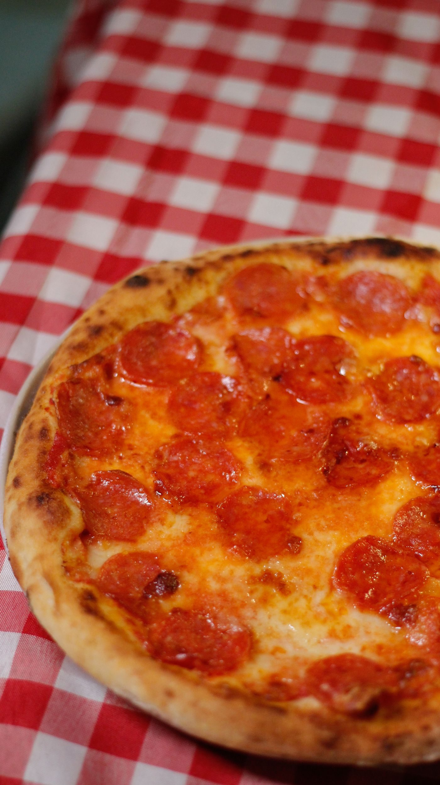

Bucktown, Metairie · Restaurant and catering
R & O Restaurant and Catering at 216 Metairie-Hammond Hwy in Bucktown serves Cajun-Creole and Italian plates, from an award-winning roast beef po-boy to thin-crust pizza, plus catering with customized menus. Takeout and delivery available.

R & O is an old-school New Orleans po-boy house in Bucktown. The roast beef po-boy is described as award-winning, and the menu also covers shrimp po-boys, seafood gumbo, crawfish, and a seafood platter.
The Italian side runs from thin-crust homemade hand-tossed pizza and veal parmesan to an Italian combo sandwich and Italian salad. The dining room has a full bar, is wheelchair-accessible, and does not take reservations. Catering menus are customized to the event.


